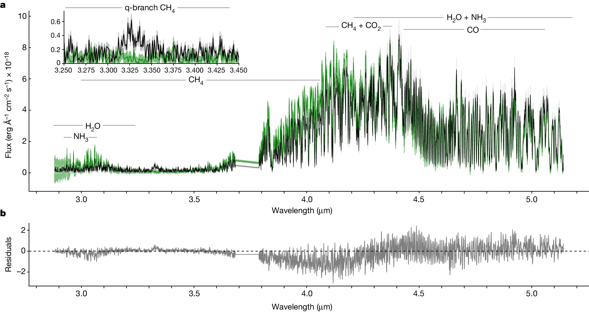
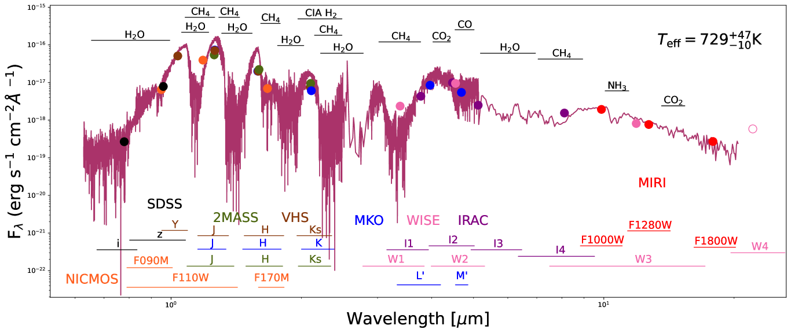

Sherelyn Alejandro Merchan
Physics PhD Candidate @ CUNY Grad Center

Physics PhD Candidate @ CUNY Grad Center
My research focuses on analyzing the atmospheres of cold extrasolar worlds using observations from the James Webb Space Telescope (JWST) in an effort to characterize them.
By constructing their spectral energy distributions (SEDs), I am able to calculate fundamental parameters like luminosity and effective temperature, which we can then compare.
Additionally, I develop code for the open-source package SEDkit: a collection of python modules used for constructing SEDs. Below are some projects I have been a part of.


If you want to contact me, email me at sherelyn12[at]gmail.com
Additionally, you can find a longer list of my works using my ORCID.
Hola! My name is Sherelyn Alejandro Merchan, and I am an astrophysicist pursuing a PhD in Physics at the CUNY Graduate Center.
I am originally from Ecuador, but I have been living in NYC for a while and completed my undergraduate studies
at Hunter College. I love thinking about the interdisciplinary link between planetary sciences and stellar astrophysics, in particular with cold
brown dwarfs as that link. Currently, I am a member of the Brown Dwarfs in NYC (BDNYC)
research group at the American Museum of Natural History, where I work with a team of amazing scientists.
When I am not coding, you can usually find me drinking iced coffee, reading, listening to music,
or at a beach somewhere with my dog Mochita. If you want to know what I am listening to, check out the music player below! Ignore
the ads that pop up, I am not paying for YouTube Premium.